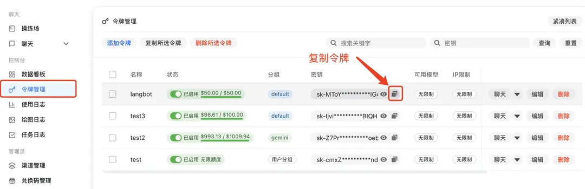
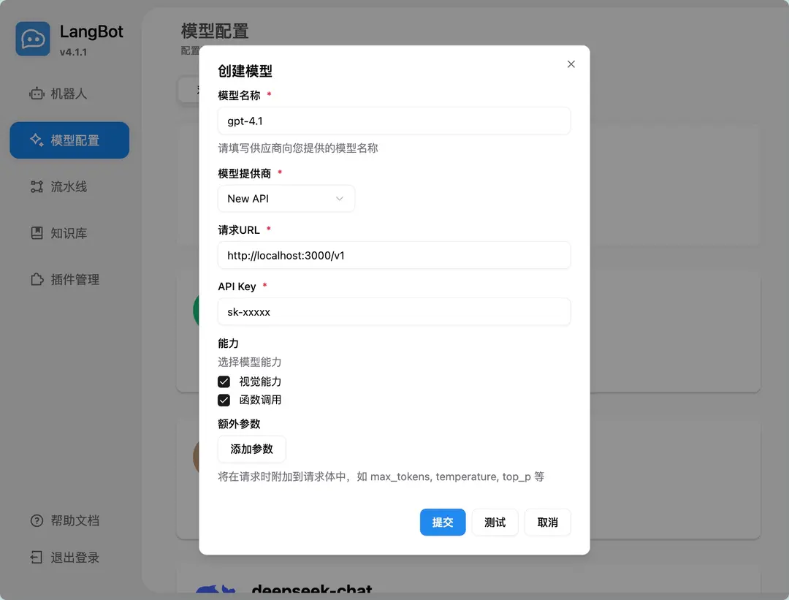
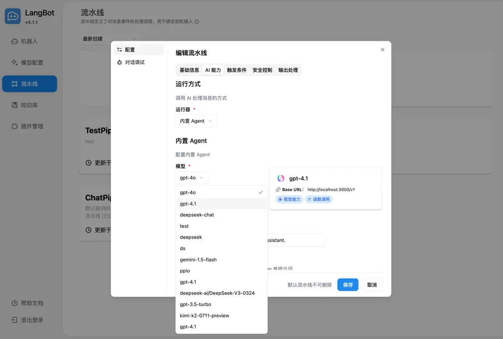
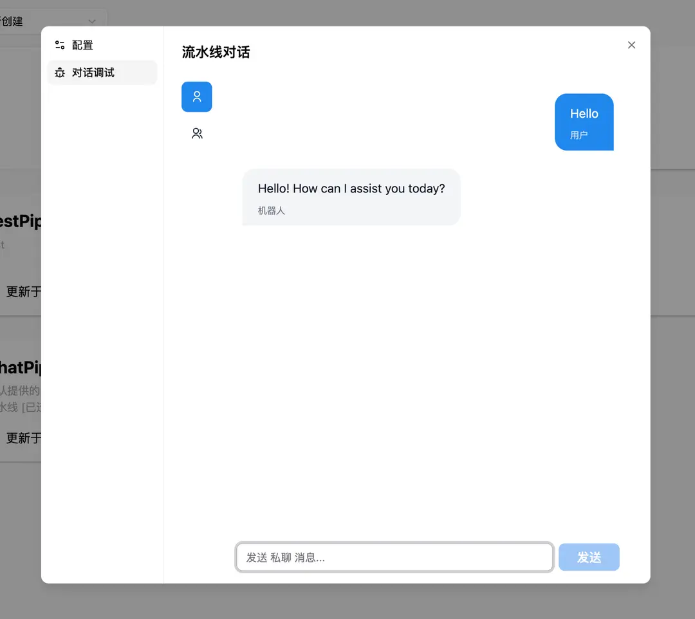
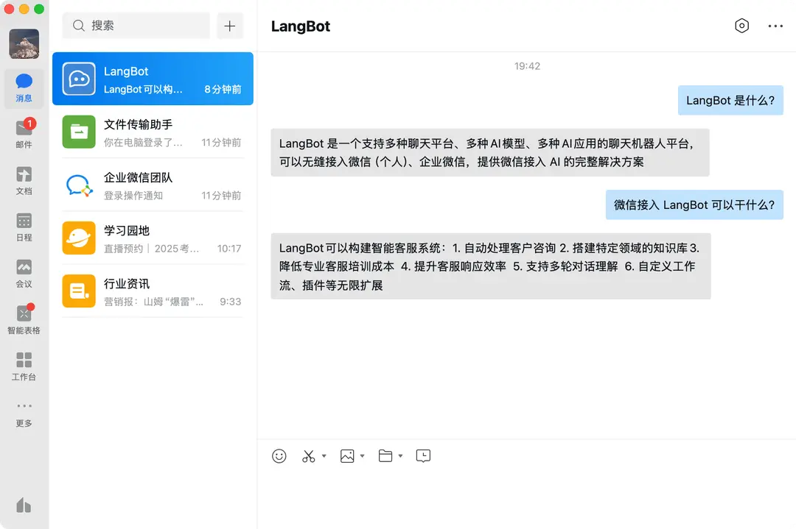
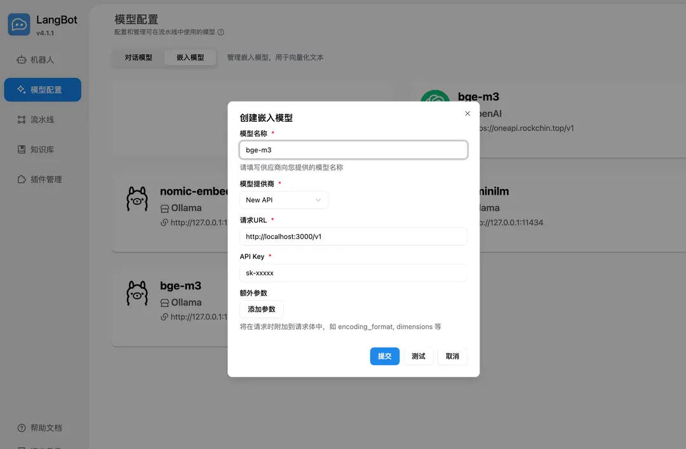
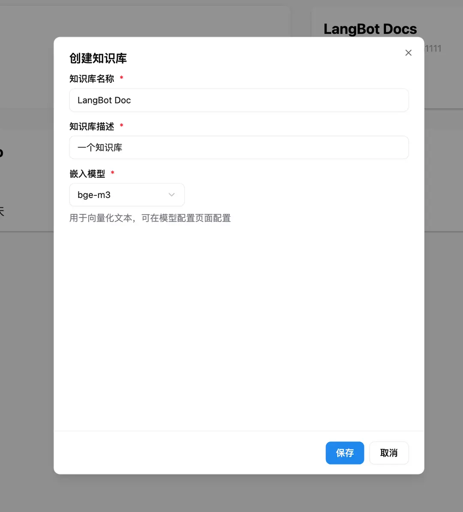

机器人
LangBot 接入教程
完整复刻源站 LangBot 教程密度：NewAPI 接入、流水线调试、微信适配和知识库嵌入模型。
飞书钉钉知识库
项目介绍
LangBot 是一个开源的即时通信机器人开发平台，支持多种即时通信平台，如飞书、钉钉、微信、QQ、Telegram、Discord、Slack 等。接入全球主流的 AI 模型，支持知识库、Agent、MCP等多种 AI 应用能力，并完美适配 词元.fast API。
- 官网地址：https://langbot.app
接入 词元.fast API
LangBot 支持接入词元.fast API 服务。
使用方式
1. 从 词元.fast API 中获取 API key

若使用 词元.fast API 服务，请配置API地址。注意，地址后需要添加/v1，如：https://ciyuan.fast/v1。
2. 在 LangBot 中添加模型，选择使用 NewAPI 供应商，填写对应的 API key 和 API 地址

3. 在流水线中选择使用模型

4. 在对话调试中对话或与绑定至流水线的机器人对话即可使用


部署配置机器人请参考部署机器人。
使用 LangBot 知识库
LangBot 支持使用词元.fast API 的嵌入模型，并将其作为知识库的向量模型。
1. 在 LangBot 中添加嵌入模型，选择使用 NewAPI 供应商

2. 在新建知识库时选用嵌入模型

更多使用方式请查看 LangBot 官方文档：https://docs.langbot.app